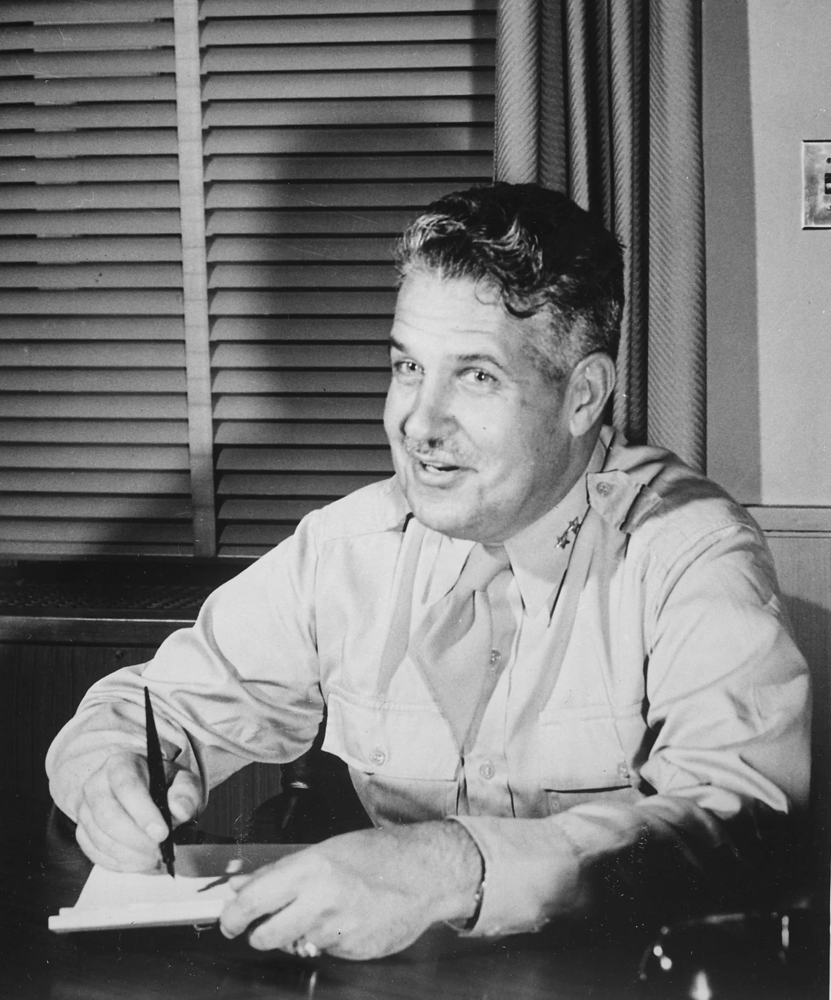
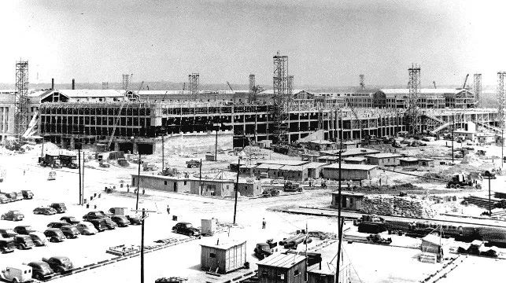
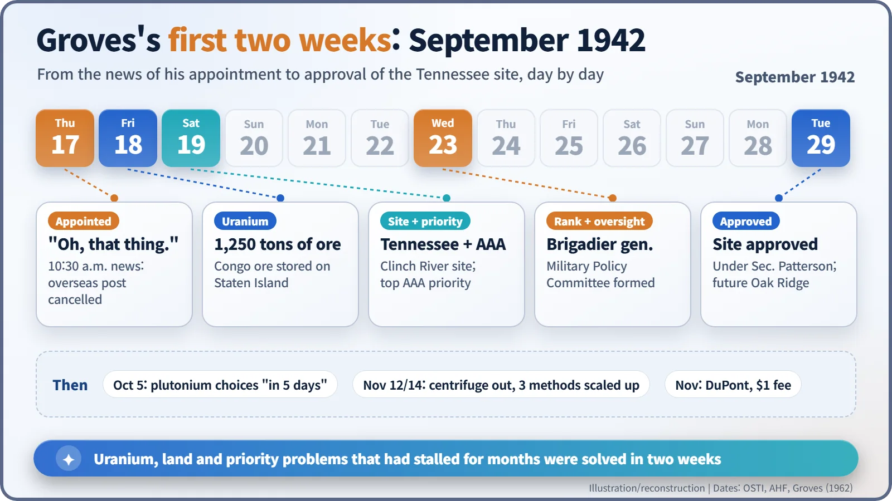
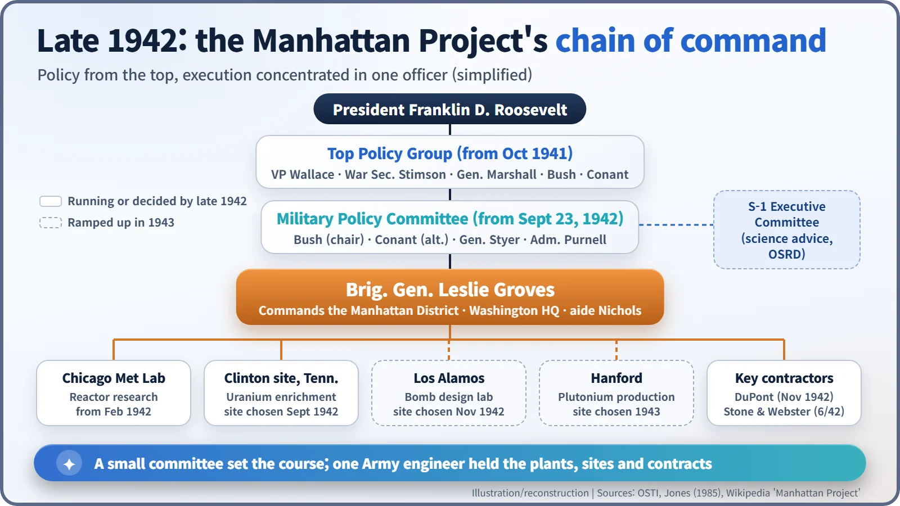

Nuclear History · 088
"Oh, That Thing" — General Leslie Groves, the Man Who Built the Pentagon, Takes Over the Manhattan Project (1942)
Told in a Capitol Hill corridor that his overseas posting was cancelled, Colonel Leslie Groves untangled uranium, land and priority problems within two weeks.
On 17 September 1942, Colonel Leslie R. Groves, the Army engineer who had driven the construction of the Pentagon, learned that he would lead the atomic bomb project instead of going overseas. His reaction was "Oh, that thing." Within two weeks he had secured uranium ore, a factory site in Tennessee and the nation's top priority rating, and by November he had DuPont on board.
"Oh, that thing"
Thursday, 17 September 1942, 10:30 in the morning, a corridor on Capitol Hill. Colonel Leslie R. Groves Jr. (1896–1970) of the US Army Corps of Engineers had just finished testifying before a House committee when his superior, Lieutenant General Brehon B. Somervell, stopped him outside the hearing room. Groves was expecting to be sent overseas. Instead Somervell told him: "The Secretary of War has selected you for a very important assignment." The overseas posting was cancelled. When Somervell added, in effect, that if he did the job right it would win the war, Groves answered with three famously unenthusiastic words: "Oh, that thing." [3] [5]
Groves told the story himself in his 1962 memoir, Now It Can Be Told. Somervell's exact words vary from source to source, but there is no doubt that Groves did not want the job.

The engineer behind the world's biggest office building
Groves graduated fourth in his class from West Point in 1918 and made his career as an Army engineer. From August 1941 he was in charge of building a new headquarters for about 40,000 War Department staff: a five-storey, five-sided building we now call the Pentagon. At the peak of construction some 13,000 people worked on the site, and by the end of May 1942 part of it was already ready for occupants. The bill grew from an estimated $35 million to about $63 million, but nobody could argue with the speed.
That speed was exactly why Somervell put his name forward. As Groves later recalled, "He wanted somebody who could drive this thing ahead... He knew I could do that, by actually having done it on the construction program." [4]

Not the founder, but the second man in charge
It is a common misconception that Groves started the Manhattan Project. In fact the atomic bomb effort had already been handed to the Army Corps of Engineers in August 1942 as the Manhattan Engineer District. The problem was progress. The project could not get high enough priority for scarce materials, and land purchases for its factories were stalled. Vannevar Bush, who ran the civilian science effort, wanted a high-ranking officer to take charge, and the Army chose Groves. So that he would carry more weight with eminent academic scientists, he was promoted to brigadier general six days later, on 23 September, and formally took command with that promotion. That is why some sources date his appointment to the 17th and others to the 23rd. [1]
Three knots untied in two weeks
He may not have wanted the job, but Groves moved astonishingly fast.
- 18 September: He sent his aide, Lieutenant Colonel Kenneth D. Nichols, to buy 1,250 tons of high-grade uranium ore from the Belgian Congo that was sitting in a warehouse on Staten Island, New York.
- 19 September: He decided to acquire a site along the Clinch River in Tennessee, the future Oak Ridge. The same day he pressed Donald Nelson, head of the War Production Board, threatening to go to the President if necessary, and won the right to use the highest emergency priority rating in existence, "AAA".
- 23 September: At a meeting in Secretary of War Henry L. Stimson's office, a Military Policy Committee was created to oversee Groves: Bush as chair (with James Conant as his alternate), Brigadier General Wilhelm Styer for the Army and Rear Admiral William Purnell for the Navy. The committee was small; the execution was concentrated in Groves.
On 29 September, Under Secretary of War Robert Patterson approved the purchase of the Tennessee land. Raw material, land and priority, problems that had dragged on for months, were solved within two weeks. [1] [3] [7]

Turning scientists' conclusions into industrial processes
To Groves, the atomic bomb was above all a gigantic construction job, and the numbers bear him out: of the project's total cost of nearly $2 billion, roughly 90 percent went into building plants and facilities. He moved the District's headquarters from New York to the War Department building in Washington, and on 5 October he ordered that engineering decisions on plutonium production, debated for months, be made "in 5 days". [3]
At meetings he called on 12 and 14 November 1942, the centrifuge method was dropped, and three methods (gaseous diffusion, the nuclear reactor or "pile", and electromagnetic separation) were sent straight to full scale, skipping the pilot-plant stage. He also courted the chemical giant DuPont from September onwards, and in November it agreed to build and run the plutonium production complex, taking no profit and a nominal fee of one dollar. Then, in late November, Groves chose a theoretical physicist to direct the new bomb-design laboratory, an unconventional choice that deserves a story of its own. [2]

"The biggest S.O.B.", and an indispensable man
For security, Groves enforced compartmentalization: each group knew only what it needed for its own work. He later called it "the very heart of security". Scientists used to open questioning and free discussion often clashed with him over it.
Opinions of Groves have always been divided. Nichols, who worked closely with him, wrote: "First, General Groves is the biggest S.O.B. I have ever worked for. He is most demanding. He is most critical. He is always a driver, never a praiser." Complaints that he was rude and arrogant followed him throughout his career. Yet Colonel James C. Marshall, the District's first head, called him "a 'take-charge guy'", and his biographer Robert S. Norris subtitled his book The Manhattan Project's Indispensable Man. [3] [4] [6] [8]
The physics of fission made the atomic bomb possible. What turned it into factories and whole new towns in about three years was schedules and contracts. And the person who forced those two worlds together was the Pentagon's construction boss who had first greeted the job with "Oh, that thing."